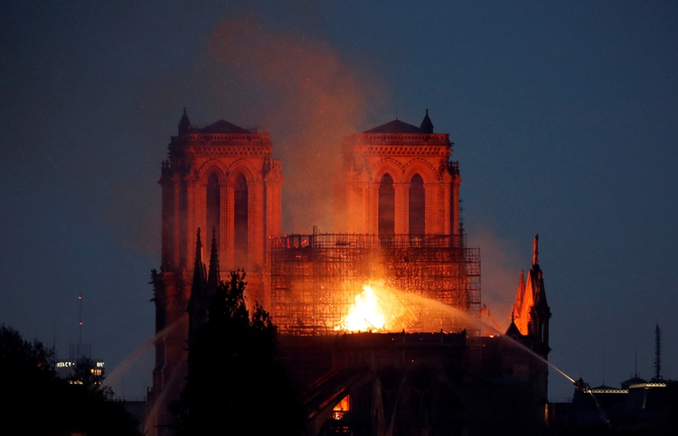

Lunes 15 de Abril de 2019 AMERICA TELESHOW DEPORTES TENDENCIAS CULTURA MIX411
Se incendia la catedral notre Dame en París: cayeron el techo y la aguja de la torre principal
Los bomberos intentan contener las llamas, mientras decenas de turistas fueron desalojados de la zona; al caer la noche, el fuego no cede. El presidente Emmanuel Macron se encuentra en el lugar

Link a la imagen